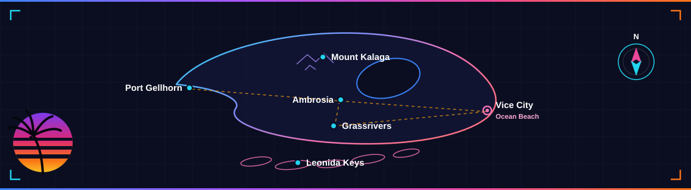

No trophies match these filters. Try clearing the search or picking another kind.
Grand Theft Auto VI · PlayStation 5 · 55 Trophies
Every trophy, its official name and grade, a guide in our own words with its sources named, and a checklist that saves your progress on your own machine.
0 of 55 earned
0%Platinum Path
PowerPyx rates the set 4 out of 10 and about 200 hours. One playthrough is enough: there is no mission replay, no New Game Plus, and free roam stays open after the story. Cheats disable trophies and saving, so keep them off for a trophy run.

Finish the 5 chapters and take optional missions as they appear. Scan vehicles and study animals on the way: the 100 percent checklist counts progress made during the story. Do the Chapter 1 meditation at Jason’s house when Lucia offers it (see Positive Mental Attitude).
After the story, the checklist opens under Progress, Stats, 100% Completion. It is lenient, closer to 60 percent true completion: 200 of 277 vehicles, 100 of 255 animals, 50 of 66 weapons, and any 70 of 80 challenges. Nothing on it is missable.
Finish the 8 Strangers and Freaks strands that count, the character questlines for Andy, Kenton, Billy, Randy, Tyrone and Bret, then sweep up whatever is left. Most trophies pop on the way through Steps 1 and 2.
Watch one trophy: Positive Mental Attitude is the only one PowerPyx and GTABase flag as possibly missable. Every other trophy stays earnable in free roam after the story.
No trophies match these filters. Try clearing the search or picking another kind.